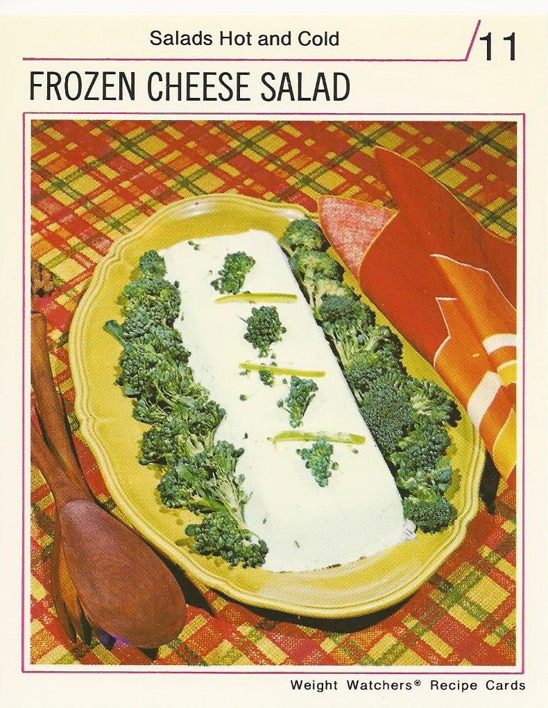

Frozen Cheese Salad

Vintage Recipe Just Like Mom Used To Make
Try this classic dish that can be served hot and cold
Ingredients
- 2 2/3 cups cottage cheese
- 8 ounces blue cheese
- 1/2 cup buttermilk
- 2 Tbsp chives
- 2 Tsp grated lemon peel
- 1 Tsp bbq sauce
- 1 Tsp Worcestershire sauce
- 2 cups raw broccoli
- Green pepper strips (to garnish)
Instructions
- Let cheese stand at room temperature for 30 minutes
- Place in blender with buttermilk, chives, lemon peel, bbq spice, and Worcestershire sauce. Process at medium speed until mixture is smooth
- Transfer to freezer tray. Freeze at least 3 hours.
- Remove from freezer 15 minutes before serving. Unmold on serving platter.
- Surround with broccoli florets and garnish with green pepper strips
Return to main page